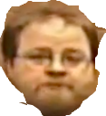

Cat with Trophy, 2018


Instructions
- Edit the image of the trophy to make the white background transparent.
- Resize the trophy image to 150 pixels wide, and save it as a PNG.
- Resize the photo of the cat to be 600 pixels wide, and save it as a JPG with quality 80.
- Update the HTML above to use the modified images.